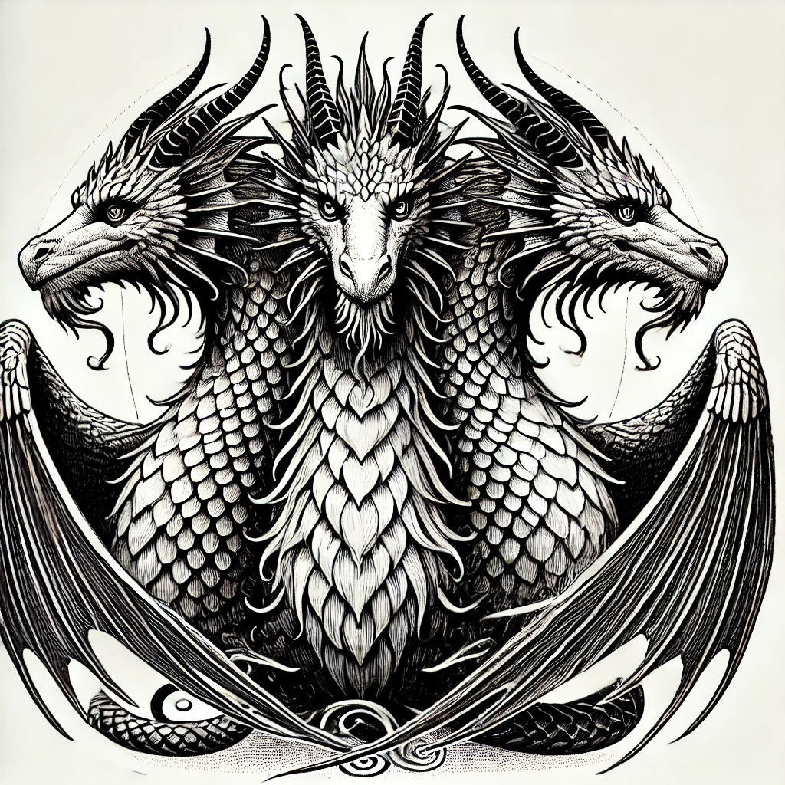

Викторина: Случайные слова
Выберите грамматику:
Выберите грамматику
Существительное
Повелительное наклонение
Прошедшее время
Перейти к грамматике
Выберите направление:
Эстонский → Русский
Русский → Эстонский
Следующий вопрос
